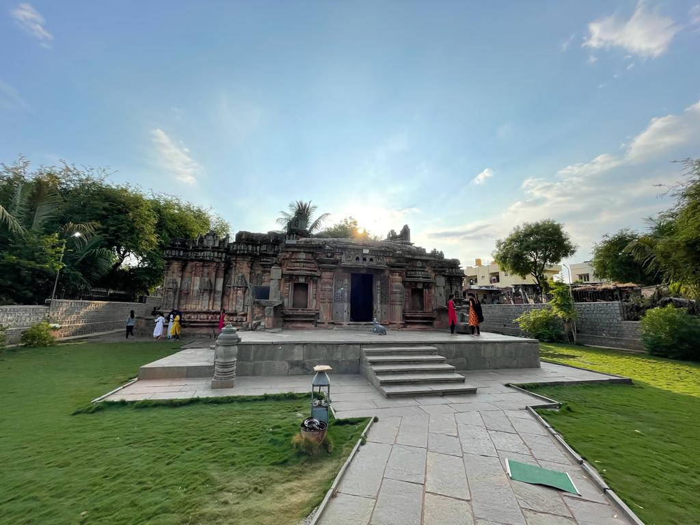

The Chandramouleshwar Temple in Dharwad stands as a
magnificent testament to the rich cultural and architectural
heritage of the region. This sacred edifice is a place of
devotion, reflecting a harmonious blend of intricate
craftsmanship and spiritual significance. With its captivating
design and historical significance, the temple draws visitors
and devotees alike, offering a glimpse into the cultural
tapestry of Dharwad
Location :-
Situated in the heart of Dharwad, a vibrant city in the state of Karnataka, India, the
Chandramouleshwar Temple graces the landscape with its divine presence. It is nestled within the
bustling streets of Dharwad, making it easily accessible to pilgrims and tourists who seek to immerse
themselves in its sanctity.
History :-
The history of the Chandramouleshwar Temple dates back centuries, tracing its origins to a bygone
era. Built in reverence to Lord Shiva, the temple holds a significant place in the annals of Dharwad's
history. The intricately carved sculptures and architectural details tell the tale of the skilled artisans
who crafted this masterpiece. Over the years, the temple has witnessed the passage of time,
embodying the stories, rituals, and traditions of generations that have paid homage to its divine aura.
The temple's historical journey is interwoven with the cultural evolution of Dharwad, making it a
cherished landmark that continues to inspire awe and devotion in all who visit